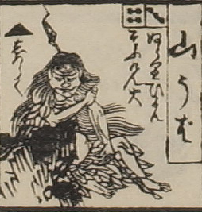

山姥；ヤマンバ，女；オンナ

山姥。髪を散切りにして背まで伸ばし、木の葉を綴ったような衣を着ている。
出典：親書誌：U426_nichibunken_0082：新版妖怪飛巡雙六；シンパンヨウカイトビマハリスゴロク／日付：2007／資源識別子：U426_nichibunken_0082_0012_0000
Copyright (c)2010- International Research Center for Japanese Studies, Kyoto, Japan. All rights reserved.